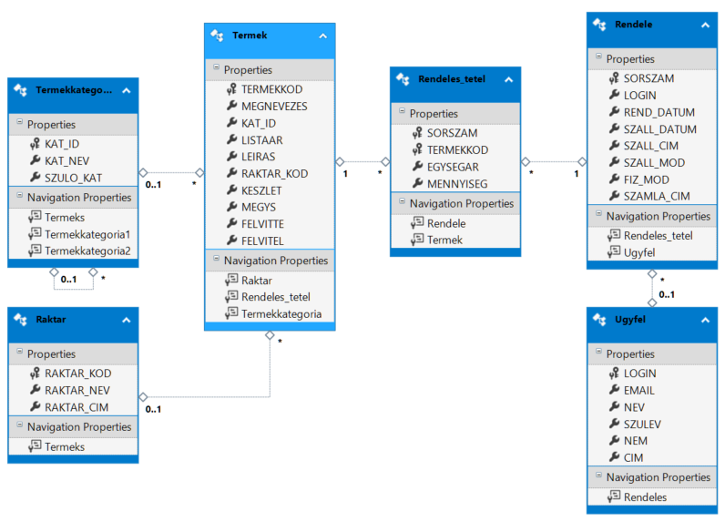
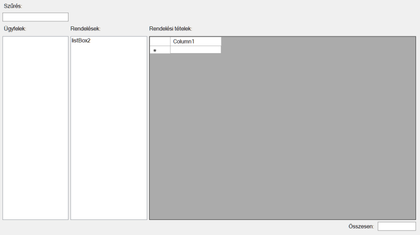

Webshop számlái - gyakorlati feladatsor
Adott egy adatbázis, melyben egy webshop a vásárlásokat tartja nyilván. Az Ugyfel táblában tárolt ügyfelek rendeléseit a Rendeles tábla tartalmazza. Minden rendelés több rendelési tételből állhat. A rendelés gyakorlatilag egy számlának felel meg, a számlához pedig tételek tartoznak. A rendelés és a termék tábla között több a több kapcsolat áll fenn: egy rendelés során több terméket is megrendelhet az ügyfél, míg ugyanaz a termék több megrendelésben is szerepelhet. A Termek és Rendeles táblák között a több a többes kapcsolat a Rendeles_tetel táblán keresztül valósul meg. Érdekesség, hogy a Rendeles_tetel táblában is szerepel egy egységár mező, és emellet a termék táblában is van egy listaár mező. Ez első ránézésre sérti az "az igazság egy helyen van" ("Single point of truth") elvet, ami azt jelenti, hogy egy adatbázisban minden adatot csak egy helyen rögzítünk. Az adatbázist azonban azért tervezték ilyenre, mert a termék listaára változhat, a megrendeléshez tartozó rendelési tételben viszont azt a pillanatnyi árat rögzítjük, amelyen a termék értékesítésre került (ez pedig például egy ideiglenes akció miatt eltérhet a listaártól).

A megoldás menete videókon -- előadás
Adatbázis felépítése
A webshop.sql script alapján építs fel egy lokális Service based database-t a projektedben! A script közel 200 000 sorból áll, így a futtatás időbe telhet.
A felhasználói felület felépítése

(+/-) Hozzátok létre az ábrán látható vezérlőket egy űrlapon!
- A baloldali
ListBox-ba kerülnek majd az ügyfelek nevei. - Miután a felhasználó kiválasztott egy ügyfelet, a második
ListBox-ba kerülnek majd aRendelestáblából az adott ügyfélhez tartozó megrendelések dátumai. - Ha felhasználó a megrendelés dátumra kattintva kiválasztott egy megrendelést, rácsban megjelennek a rendeléshez tartozó rendelési tételek.
Ügyfelek neveinek kereshető megjelenítése
(+/-) Első lépésben hozz létre ÜgyfélSzűrés néven egy void típusú függvényt, mely a textBox1-be írt szöveg alapján LINQ lekérdezéssel leszűri az Ugyfel táblát, majd az eredményt megjeleníti a listBox1-ben! Ne felejtsétek beállítani a listBox1 DisplayMember tulajdonságát!
Tipp:
DisplayMemberés aValueMembertulajdonságokat azelőtt szoktuk beállítani, mielőtt aListBoxDataSourecetulajdonságához hozzárendeltük az adatforrást.
(+/-) textBox1 TextChanged eseményhez rendelj eseménykiszolgáló függvényt, melyben meghívod az ÜgyfélSzűrés()-t.
(+/-) Annak érdekében, hogy az alkalmazás indítása után rögtön legyenek adatok a listában, ÜgyfélSzűrés() metódust érdemes a konstruktorból az InitializeComponent(); után is meghívni.
A kiválasztott ügyfél rendeléseinek listázása
(+/-) Rendelj eseménykiszolgálót a listBox1 SelectedIndexChanged eseményhez. Az eseménykiszolgálóban állapítsd meg a listában kiválasztott elemhez tartozó kulcs értékét!
Tipp: a
listBox1adat forrásaUgyfeltípusú elemeket tartalmaz. Innentől fogva biztosak lehetünk abban, hogy alistBox1.SelectedItemtulajdonságból kiolvasott érték isUgyfeltípusú, vagynullis lehet, ha éppen nincs kiválasztott elem a listában.
Ebből következik, hogy a listBox1.SelectedItem tulajdonsága Ugyfel típusúvá castolható:
(Ugyfel)listBox1.SelectedItem
Ezután már könnyen megállapítható kiválasztott elemhez tartozó keresett kulcs értéke:
var LOGIN = ((Ugyfel)listBox1.SelectedItem).LOGIN;
Az hogy melyik a kulcs mező, az adatmodell alapján könnyedén megállapítható. A kulcs mező adattípusát, úgy lehet a legkönnyebben megállapítani, hogy fölé visszük az egeret. Ha nincs kedvünk bajlódni a típus megállapításával, használható a var kulcsszó kulcsszó, hiszen a fordító számára a kifejezés jobb oldalából egyértelműen következik, milyen típust kell használni.
(+/-) A listában kiválasztott elemhez tartozó kulcs ismeretében már szűrhető a rendelési tételek tábla.
private void ListBox1_SelectedIndexChanged(object sender, EventArgs e)
{
var LOGIN = ((Ugyfel)listBox1.SelectedItem).LOGIN;
var rendelések = from x in context.Rendeles where x.LOGIN == LOGIN select x;
listBox2.DisplayMember = "REND_DATUM";
listBox2.DataSource = rendelések.ToList();
}
Rendelési tételek megjelenítése a rendelés kiválasztása után
(+/-) Rendelj eseménykiszolgálót a listBox2 SelectedIndexChanged eseményhez. Az eseménykiszolgálóban állapítsd meg a listában kiválasztott elemhez tartozó kulcs értékét.
A megoldás hasonló mint az előbb -- annyi különbséggel, hogy a
listBox2adatforrásaRendelestípusú elemeket tartalmaz, és biztosak lehetünk abbanlistBox1.SelectedItemRendelestípusúra castolható. Az adatmodellből megállapítható, hogy a kulcs aRendelestáblában aSORSZAM.
Első megközelítésben jelenítjük meg a Rendeles_tetel tábla összes oszlopát a rácsban.
private void ListBox2_SelectedIndexChanged(object sender, EventArgs e)
{
var SORSZAM = ((Rendeles)listBox2.SelectedItem).SORSZAM;
var rendelésiTételek = from x in context.Rendeles_tetel
where x.SORSZAM == SORSZAM
select x;
dataGridView4.DataSource = rendelésiTételek.ToList();
}
Futtatás után látható, hogy a rácsban több idegen kulcs található, megyek feloldása nélkül a felhasználó számára nem értelmezhető az eredmény. Alakítsuk át a LINQ lekérdezést úgy, hogy értelmezhető legyen a rács tartalma:
private void ListBox2_SelectedIndexChanged(object sender, EventArgs e)
{
var SORSZAM = ((Rendele)listBox2.SelectedItem).SORSZAM;
var rendelésiTételek = from x in context.Rendeles_tetel
where x.SORSZAM == SORSZAM
select new {
Teméknév = x.Termek.MEGNEVEZES,
Kategória = x.Termek.Termekkategoria.KAT_NEV,
Egységár = x.EGYSEGAR,
Megység = x.Termek.MEGYS,
Mennyiség = x.MENNYISEG
};
dataGridView4.DataSource = rendelésiTételek.ToList();
}
A fenti lekérdezést úgy érdemes összeállítani, hogy közben nézzük az adatmodellt. Az idegen kulcsok irányába el lehet " lépkedni" a lekérdezésben. A példában a Rendeles_tetel táblából kérdezünk. A Rendeles_tetel táblában TERMEKKOD egy idegen kulcs, mely a Termek táblában lévő TERMEKKOD nevű kulccsal kapcsolatban. Az anonim típusban az egyenlőségjel bal oldalán szereplő tulajdonságnév tetszőleges lehet, arra kell odafigyelni, hogy két egyforma ne legyen.
(+/-) Egészítsd ki a fenti feladatban lévő lekérdezést úgy, hogy egy Ár nevű oszlopban jelenjen meg az egységár is rendelt mennyiség szorzata.
(+/-) Készíts LINQ lekérdezést, mely kiszámolja rendelésben szereplő rendelési tételek összértékét! Az eredményt jelentsd meg egy címkében!
var összesen = (from x in rendelésiTételek select x.Ár).Sum();